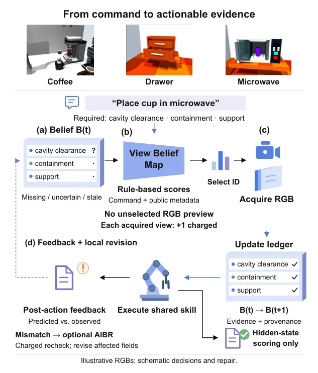
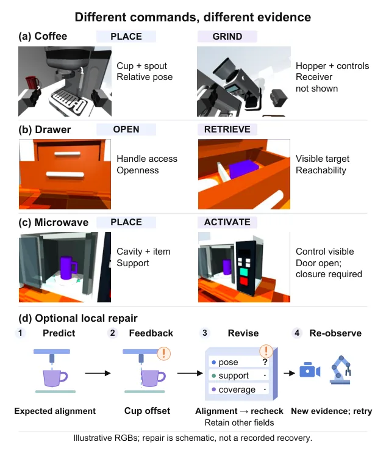
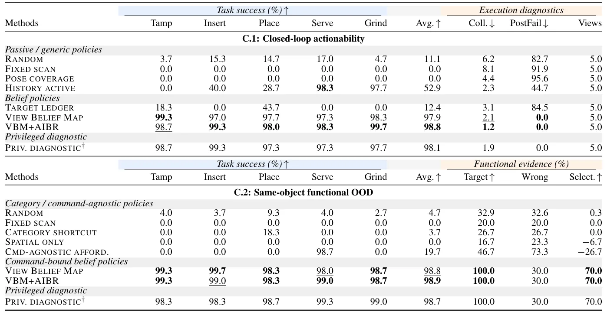
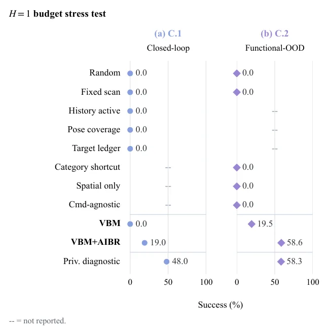

O Problema da Crença Espacial Genérica
Em robótica de manipulação, existe uma distinção crítica entre descrever uma cena e obter evidência para executar uma ação. Benchmarks de raciocínio espacial tradicional avaliam se um modelo pode descrever um ambiente, mas isso não garante que o agente adquiriu a informação necessária para tornar um comando executável. Uma visão que é informativa para uma tarefa pode ser inútil para outra, mesmo na mesma estação de trabalho.
Considere uma estação de café. Para tamper (comprimir o pó), o robô precisa observar a cesta do portafilter, a superfície do puck e o alinhamento do tamper. Para colocar um copo, ele precisa verificar o alinhamento entre copo e bico, suporte e folga. Para moer, precisa ver o funil, o canal de saída e os controles relevantes. O espaço físico é inalterado, mas a evidência espacial necessária muda radicalmente com o comando.
Trabalhos recentes expandiram o raciocínio espacial de perguntas passivas para construção ativa de crença e interação corporificada. Projetos como Theory of Space estudam se agentes podem adquirir, manter e revisar crenças espaciais através da exploração. ESI-Bench avalia inteligência espacial através de loops de percepção-ação. No entanto, essas abordagens muitas vezes medem a precisão da resposta espacial ou a qualidade da representação global, sem garantir que a visão selecionada expõe a evidência funcional necessária para a próxima ação.
O sucesso final da manipulação, por si só, não revela se o agente selecionou a evidência correta, se usou atalhos ou se foi resgatado pelo controlador. Uma crença geometricamente precisa pode conter muitos fatos enquanto omite a única relação que torna a próxima ação segura e executável. É necessário um controle rigoroso que avalie se a visão selecionada expõe a evidência necessária para uma habilidade compartilhada e scriptada.
Seeing What Matters: O Benchmark
Os autores apresentam o 'Seeing What Matters', um benchmark para crença espacial acionável condicionada à tarefa em manipulação simulada de mesa. O benchmark opera em três domínios: estação de café, gavetas/armários e micro-ondas/aparelhos. Ele fornece 860 casos de avaliação congelados. Ao expandir através de métodos, orçamentos e repetições de inferência, gera mais de 115.000 episódios do avaliador sob dois protocolos: acionabilidade em loop fechado e generalização funcional fora da distribuição (OOD) para o mesmo objeto.
Cada caso emparelha um conjunto de visões RGB candidatas com um comando de manipulação, habilidades scriptadas compartilhadas e pós-condições ocultas. Isso permite que o benchmark meça diretamente se uma política de seleção de visões adquire as observações que o comando realmente precisa. A avaliação não se baseia na completude da cena, mas na aquisição da evidência que o comando atual exige.
O benchmark também fornece um pipeline de referência diagnóstico que mantém um estado de crença espacial-funcional e classifica as visões pela evidência faltante. Este pipeline atua como uma âncora de calibração fixa, permitindo comparar métodos que não têm acesso a privilégios de avaliação, mas ainda assim precisam aprender a vincular comando a evidência. A ideia central é que a crença espacial para manipulação deve ser avaliada não pela completude do nível da cena, mas por se ela adquire a evidência que o comando atual requer.

Metodologia: Do Comando à Evidência
O cerne do benchmark é a distinção entre crença espacial agnóstica à tarefa e crença acionável condicionada ao comando. Na abordagem agnóstica, o agente explora o ambiente para construir um mapa ou representação geral, sem saber qual ação virá em seguida. Na abordagem condicionada, o comando define quais predicados espaciais são relevantes. O sistema mantém um 'livro de registro' (ledger) que rastreia quais evidências funcionais foram adquiridas e quais ainda faltam para satisfazer as pré-condições da habilidade scriptada.
O pipeline de referência utiliza metadados de cobertura funcional para classificar as visões candidatas. Ele não apenas verifica se o objeto está presente, mas se a parte funcional específica (como o alinhamento do bico do café com o copo) está visível e clara. Quando o agente seleciona uma visão, ele atualiza o registro. Se a evidência ainda estiver faltante, ele pode realizar uma revisão de crença induzida pela ação (AIBR) para adquirir uma nova visão, mas isso consome orçamento de visão.
A avaliação é feita em um simulador realista. As pós-condições (o estado final desejado após a ação) são ocultas durante a seleção de visão, mas usadas pelo avaliador para determinar o sucesso. Isso força o agente a depender exclusivamente da qualidade da evidência visual adquirida durante a fase de percepção. Se o agente escolher uma visão que não revela o alinhamento necessário, a ação falhará, mesmo que o robô tenha 'visto' o copo e o bico de forma genérica.

Resultados: Acionabilidade em Loop Fechado
Os resultados no protocolo de acionabilidade em loop fechado (C.1, com orçamento de H=5 visões) mostram que a seleção de visão condicionada à tarefa transforma a crença espacial em ação executável. O seletor de referência diagnóstico, com revisão de crença induzida pela ação, atingiu 98,8% de sucesso médio. Isso melhora o método 'History Active' em 45,9 pontos e o 'Target Ledger' em 86,4 pontos.
Essa melhoria não é explicada apenas pela memória. O livro de registro deve expor qual predicado faltante deve determinar a próxima visão. As curvas de orçamento confirmam que a vantagem do seletor de referência persiste em vários níveis de orçamento (H=1, 3, 5, 8). No entanto, os resultados de teto não significam que o benchmark foi resolvido em todos os regimes de observação.
Um teste de estresse com orçamento rígido de H=1 (apenas uma visão inicial) revela dificuldades residuais. Mesmo com a permissão de adquirir observações adicionais após um erro, o método de referência cai para 19,0% no domínio C.1 e 58,6% no C.2. Isso expõe a dificuldade real que fica oculta pelos ajustes principais de H=5 e H=3, mostrando que a seleção inicial crítica é o ponto de falha mais sensível.

Generalização Funcional OOD
No protocolo de generalização funcional fora da distribuição (OOD) para o mesmo objeto (C.2), o desafio é maior. O agente pode observar a máquina de café, mas falhar se observar a parte funcional errada para o comando. O seletor de referência com reparo opcional atingiu 98,9% de sucesso e 70,0% de seletividade de evidência funcional.
Políticas agnósticas à categoria ou atalhos de categoria falharam, apesar de verem partes plausíveis dos objetos. Por exemplo, a política 'Category Shortcut' teve 0% de sucesso em tarefas como Tamp e Insert. A política 'Spatial Only' também teve 0%. Isso demonstra que a presença de objetos no campo de visão não é suficiente; é necessário vincular o comando às partes funcionais específicas.
A visualização de evidência funcional mostra a dissociação: a observação da evidência funcional alvo acompanha o sucesso, enquanto a observação da evidência de comando errado não. Isso confirma que o sucesso depende da precisão da seleção de evidência, não apenas da cobertura visual geral. O benchmark prova que a crença espacial deve ser funcionalmente vinculada ao comando para ser útil.
Teste de Estresse com Modelos de Fundação
Os autores realizaram um teste de estresse rigoroso com sete modelos de linguagem e visão (VLMs) de última geração: Grok 4.3, Grok 4.6, Amazon Nova Pro, Qwen3-VL-8B, Gemma 3 27B, Llama 4 Maverick e Sonar Pro. O protocolo foi estrito: os modelos precisavam processar 1.500 casos, retornar JSON válido, selecionar exatamente três visões únicas de um conjunto de doze e manter a ordem dos casos. Apenas sete modelos passaram pelo filtro.
Os resultados foram decepcionantes para o estado da arte. O sucesso pós-condição dos VLMs variou de 26,0% a 42,9%. Grok 4.3 liderou com 42,9%, seguido por Grok 4.6 com 42,5%. Todos os sete modelos clusterizaram dentro de uma banda de 16,9 pontos, sugerindo uma falha sistemática na seleção de visão condicionada à tarefa, não uma fraqueza isolada de um fornecedor.
O modelo mais forte ficou 55,9 pontos abaixo do seletor de referência diagnóstico no ajuste principal. Isso indica que o ranking baseado em prompts atuais não recupera as regras de vínculo comando-evidência do benchmark. A lacuna não é uma comparação controlada de arquitetura, mas mostra que a classificação por prompt não é suficiente para robótica de manipulação precisa.

Análise de Padrões e Limitações
O padrão em nível de tarefa é consistente entre os modelos: tarefas como Tamp e Place, que envolvem partes visualmente salientes e grandes (cesta do portafilter, alinhamento copo-bico), permitem pontuações quase perfeitas de vários VLMs. Já tarefas como Insert, Serve e Grind exigem observar cadeias funcionais menores ou parcialmente ocultas (caminho funil-canal, folga da bandeja de gotejamento, contato moedor-receptor), onde os VLMs falham em priorizar.
Isso sugere que a lacuna é impulsionada pela incapacidade dos modelos de vincular o comando à cadeia específica de evidência de parte funcional, e não por uma falha generalizada em perceber a cena. Os modelos podem ver o objeto, mas não entendem quais detalhes visuais são logicamente necessários para a ação subsequente.
O benchmark também testa a robustez do pipeline de referência. Substituir os metadados de cobertura do pipeline por escore derivados congelados de RGB preserva 98,5%/98,9% de sucesso, mas embaralhar os escores visuais colapsa o sucesso para 15%/11%. Isso confirma que o resultado depende do conteúdo da imagem e da lógica de seleção, não de artefatos de avaliação.
Limitações incluem o foco em ambientes simulados e domésticos controlados. A generalização para cenários não estruturados ou dinâmicos não foi avaliada. Além disso, o benchmark avalia políticas de seleção de visão, não a execução completa da manipulação, embora use habilidades scriptadas para isolar o problema de percepção. A queda drástica no teste de H=1 mostra que a robustez inicial é frágil.
Conclusão
O 'Seeing What Matters' estabelece que a crença espacial para manipulação deve ser avaliada pela sua capacidade de adquirir a evidência que o comando atual requer, não pela completude da cena. Benchmarks passivos falham em capturar essa nuance, levando a uma superestimação da capacidade de agentes baseados em VLMs para robótica.
A lacuna de 55,9 pontos entre os melhores VLMs e o pipeline de referência diagnóstico é significativa. Ela sugere que, para avançar na robótica corporificada, precisamos de métodos que vinculem explicitamente comandos a evidências funcionais espaciais, indo além da percepção genérica. O benchmark fornece uma base sólida para medir esse progresso futuro.
O que fica
- O benchmark 'Seeing What Matters' avalia se agentes selecionam visões que fornecem evidência funcional específica para um comando, não apenas uma descrição genérica da cena.
- Modelos VLMs de ponta falham sistematicamente (26-43% de sucesso) ao vincular comandos a evidências espaciais funcionais, mesmo percebendo os objetos corretamente.
- O sucesso na manipulação depende de observar partes funcionais específicas (ex: alinhamento bico-copo), não apenas da presença do objeto no campo de visão.
- O teste de estresse com orçamento de visão igual a 1 expõe a fragilidade da seleção inicial, mostrando que a robustez depende criticamente da primeira escolha.
Paper original: Seeing What Matters: Benchmarking Task-Conditioned Actionable Spatial Belief for Manipulation
Comentários
Nenhum comentário ainda. Seja o primeiro.